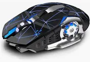

Offbeat® Bluetooth 5.1 + 2.4 GHz Wireless Gaming Mouse
Starting from $15.00
About this item
- 2-Mode Bluetooth + Wireless Mouse: ALPHA wireless mouse can be connected by Bluetooth 5.1 and 2.4GHz. It connects up to 2 devices like Windows computer, MacBook, and Android tablet. You can freely switch to each mode by clicking the mode switch button at the bottom. The maximum operating distance of each mode is 10 meters.
- Type C Charging Rechargeable Battery: ALPHA wireless mouse has an in-built rechargeable Li-ion 450mAh battery and does not require any external battery. It adopts an intelligent energy-saving design, has a long standby time with auto sleep mode, and can be used while charging. Latest Type "C" charging port.
- Multi Function Buttons: 7D Buttons give you many options in one hand to tackle any situation irrespective of the game genre or gamer style. Pre-programmed forward/back navigation buttons and an easy-to-use scroll wheel. It gives you multiple choices to set the sensitivity parameters suiting your style in the best way from 1600-2400-3200 DPI.